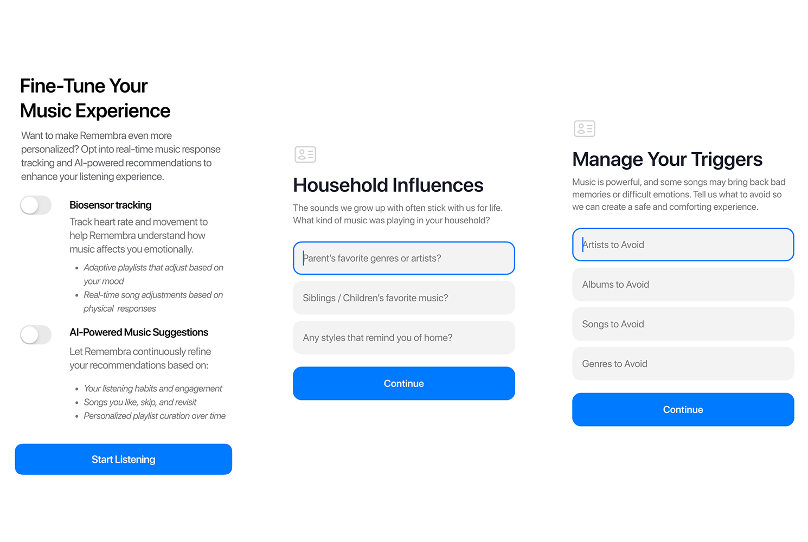
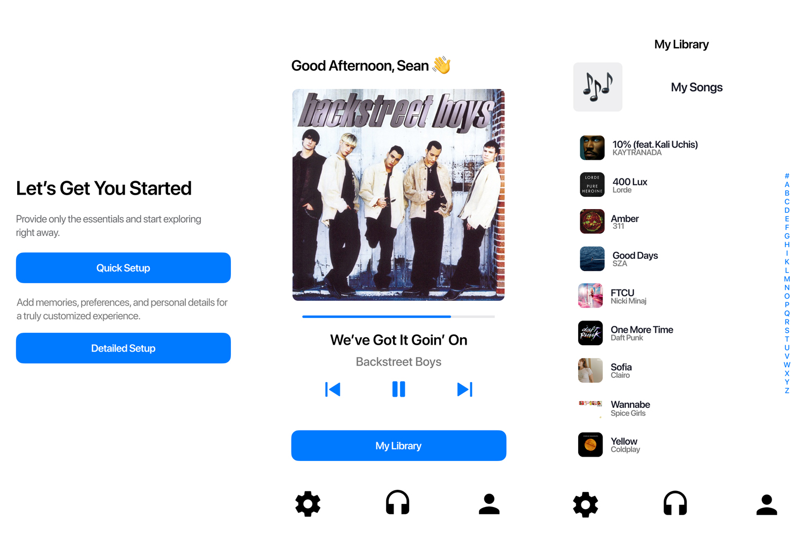
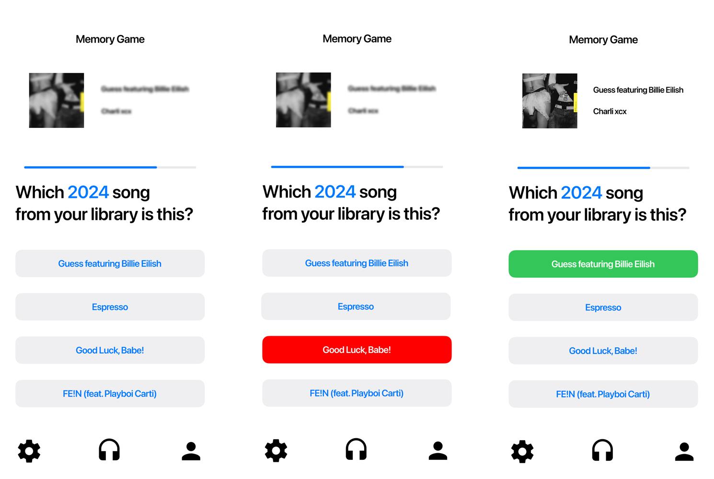
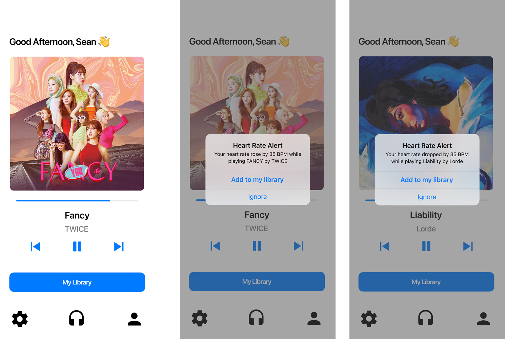

01 / Overview
Overview
Remembra is a music-based memory support app designed for individuals experiencing Alzheimer’s, dementia, and cognitive decline. The project explored how personalized music therapy, AI-driven recommendations, and wearable biosensor integration could create more emotionally engaging and supportive experiences for both patients and caregivers.
As UX Lead, I focused on shaping the user experience, interface direction, and overall product vision through research, wireframing, prototyping, and collaborative iteration with an interdisciplinary team of public health and informatics students.
02 / The Problem
The Problem
Over 55 million individuals globally experience memory loss from Alzheimer's, dementia, and related cognitive disorders—a number expected to reach 139 million by 2050. With someone diagnosed every 3.2 seconds, traditional treatments fall short in addressing emotional and cognitive well-being.
Remembra combines the proven therapeutic benefits of music—clinically shown to delay cognitive decline and reduce depression—with advanced AI and wearable biosensor technology. Our personalized app learns from your emotional responses and preferences, curating an experience that reconnects you to cherished memories, enhances cognitive function, and uplifts your emotional health.
03 / Features
Features
Personalized AI
Get music recommendations designed around your personal memories and preferences.

User Friendly:
Intuitive and Simple Designed to be easily accessible by users of all ages.

Gameification
Test Your Memory and Turn everyday music therapy into playful memory challenges.

Biosensors
Real-time heart rate and activity tracking provide live feedback, ensuring each music session is continually refined for comfort and effectiveness.

04 / Research
Research
Clinical research shows that music therapy can meaningfully improve the lives of those experiencing cognitive decline. Studies like Chu et al. (2014) have demonstrated that personalized music programs can reduce anxiety, elevate mood, and even slow short-term memory deterioration. Remembra builds on this foundation—combining the proven benefits of music therapy with the power of AI and biometric feedback. By tracking heart rate and engagement in real time, Remembra adapts to each user’s unique responses. The result? A dynamic, emotionally resonant experience that goes far beyond traditional therapy.
05 / User Friendly
User Friendly
Remembra is designed with real-world users in mind—whether that’s a memory-impaired individual or a busy caregiver. The interface is intentionally simple, with large buttons, bold colors, and intuitive navigation tailored to older adults and those unfamiliar with technology. Caregivers can easily create playlists, monitor emotional responses through biosensor data, and tweak settings for optimal comfort. For more independent users, the app offers advanced features like gamified memory recall challenges and AI-generated playlists fine-tuned to their preferences. Therapy shouldn’t feel like work—it should feel like listening to your favorite song.
06 / Personalization
Personalization
No two memories are alike, so why should music therapy be one-size-fits-all? Remembra’s AI learns from every interaction, adjusting recommendations based not just on musical preferences but also on real-time biosensor input like heart rate changes. It’s like having a therapist who knows your favorite artist and how you’re feeling. From “Guess the Song” memory games to a fine-tuned music diary feature, Remembra engages the brain through play, routine, and nostalgia. As you grow, the app evolves with you to keep therapy relevant and enjoyable.
07 / Prototype
Prototype
Our High-Fidelity Prototype
Building on user feedback and iterative design, we refined Remembra into a fully interactive, visually cohesive high-fidelity model. This prototype captures our vision for a smooth, user-friendly experience—everything from AI-powered recommendations to intuitive music controls is on display here.
08 / Project Presentation
Project Presentation
09 / Team
Team
Bryan Cardona
Team Lead, Public Health Policy. School of Public Health
Julia Chan
Product Lead, Public Health Sciences, School of Population & Public Health
Ethan Mandel
UX Lead, Informatics, School of Information and Computer Sciences
Diego Guzman
CTO, Informatics, School of Information and Computer Sciences
10 / App Development
App Development
Our Remembra music therapy application is built on a TypeScript and JavaScript foundation, ensuring robust type-checking and smoother collaboration across the codebase. The frontend leverages Expo Go for seamless development, while Firebase provides real-time data storage, user authentication, and serverless functionality. On the backend, Python scripts handle data processing and more advanced tasks like generating AI-driven music recommendations or managing biosensor data pipelines. By combining these technologies—TypeScript’s strong typing, Expo Go’s cross-platform ease, Firebase’s scalable backend, and Python’s flexibility—Remembra delivers a responsive, secure, and highly extensible music therapy experience for users.
11 / Takeaways
Takeaways
Remembra was one of the first projects where our team worked with a level of independence that felt much closer to a real-world collaboration environment rather than a traditional classroom assignment. Instead of following strict deliverables or heavily guided instruction, we were responsible for shaping the direction of the project ourselves, communicating across disciplines, and managing how the product evolved over time.
Working alongside students from both public health and informatics gave the project a wider range of perspectives and ideas, which pushed the experience beyond just a technical exercise. As UX Lead, I was able to take ownership over the product vision, interface direction, and overall user experience while also learning how to collaborate around the strengths and expertise of other team members. The project reinforced how important communication, adaptability, and interdisciplinary teamwork are when building products intended for real people.